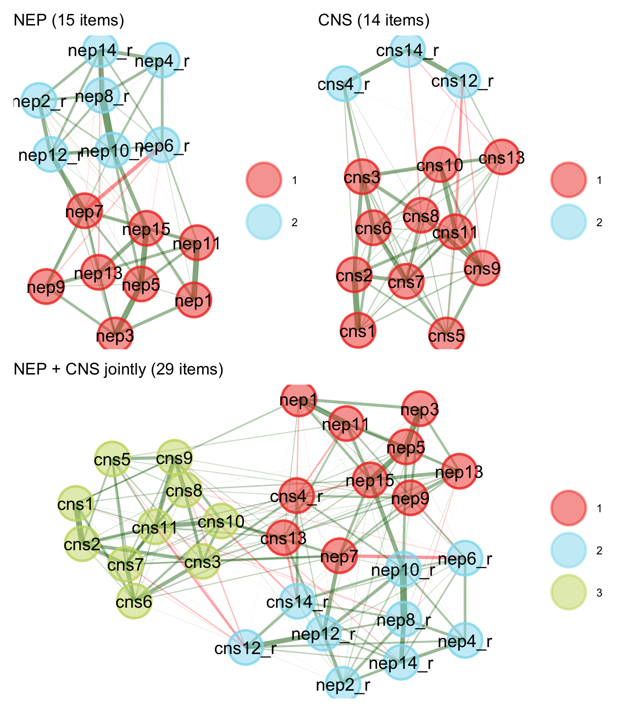

Supplemental Materials for Environmental Belief System Networks and Pro-Environmental Behavior
S1. Dimensionality of the Study 1 NEP and CNS scales
I use exploratory graph analysis (EGA) and unique variable analysis (UVA) to check that the New Ecological Paradigm (NEP) and Connectedness to Nature Scale (CNS) items each form a single dimension before the scales enter the belief network. EGA estimates a regularized partial-correlation network over the items and detects communities with the Walktrap algorithm. A bootstrap with 500 resamples assesses the stability of that structure. UVA flags locally redundant item pairs with weighted topological overlap (wTO), using a redundancy threshold of 0.25.
For both scales the EGA solution splits into two communities that separate the forward-worded from the reverse-worded items rather than distinct content facets (Figure 1; Table 1, Table 2). This is a wording artifact rather than substantive multidimensionality, so I treat each scale as one dimension. UVA flags no item pairs above the 0.25 threshold (Table 3), so I do not drop or combine any items. A single-dimension EGA network score and the unit-weighted item mean correlate above .97 for each scale and relate to the behavior measures almost identically (Table 4), so the analysis in the main text uses the item means.
| Scale | Items | alpha | EGA dimensions | bootEGA median dim | bootEGA modal dim | Structural consistency | Mean item stability |
|---|---|---|---|---|---|---|---|
| NEP | 15 | 0.82 | 2 | 2 | 2 (85% of resamples) | 0.75 / 0.78 | 0.96 |
| CNS | 14 | 0.81 | 2 | 2 | 2 (68% of resamples) | 0.59 / 0.93 | 0.88 |
| Item | Scale | Keying | Community (scale EGA) | Community (joint EGA) | Item stability |
|---|---|---|---|---|---|
| nep1 | NEP | forward | 1 | 1 | 0.994 |
| nep2_r | NEP | reverse | 2 | 2 | 1.000 |
| nep3 | NEP | forward | 1 | 1 | 1.000 |
| nep4_r | NEP | reverse | 2 | 2 | 1.000 |
| nep5 | NEP | forward | 1 | 1 | 1.000 |
| nep6_r | NEP | reverse | 2 | 2 | 0.778 |
| nep7 | NEP | forward | 1 | 1 | 0.756 |
| nep8_r | NEP | reverse | 2 | 2 | 1.000 |
| nep9 | NEP | forward | 1 | 1 | 0.940 |
| nep10_r | NEP | reverse | 2 | 2 | 1.000 |
| nep11 | NEP | forward | 1 | 1 | 0.994 |
| nep12_r | NEP | reverse | 2 | 2 | 1.000 |
| nep13 | NEP | forward | 1 | 1 | 0.990 |
| nep14_r | NEP | reverse | 2 | 2 | 1.000 |
| nep15 | NEP | forward | 1 | 1 | 1.000 |
| cns1 | CNS | forward | 1 | 3 | 0.866 |
| cns2 | CNS | forward | 1 | 3 | 0.862 |
| cns3 | CNS | forward | 1 | 3 | 0.902 |
| cns4_r | CNS | reverse | 2 | 1 | 0.876 |
| cns5 | CNS | forward | 1 | 3 | 0.928 |
| cns6 | CNS | forward | 1 | 3 | 0.900 |
| cns7 | CNS | forward | 1 | 3 | 0.940 |
| cns8 | CNS | forward | 1 | 3 | 0.820 |
| cns9 | CNS | forward | 1 | 3 | 0.884 |
| cns10 | CNS | forward | 1 | 3 | 0.930 |
| cns11 | CNS | forward | 1 | 3 | 0.894 |
| cns12_r | CNS | reverse | 2 | 2 | 0.906 |
| cns13 | CNS | forward | 1 | 1 | 0.706 |
| cns14_r | CNS | reverse | 2 | 2 | 0.954 |
| Scale | Item i | Item j | wTO |
|---|---|---|---|
| NEP | nep8_r | nep10_r | 0.230 |
| NEP | nep1 | nep11 | 0.214 |
| NEP | nep3 | nep5 | 0.195 |
| NEP | nep8_r | nep14_r | 0.185 |
| NEP | nep5 | nep15 | 0.185 |
| CNS | cns1 | cns2 | 0.217 |
| CNS | cns12_r | cns14_r | 0.165 |
| CNS | cns9 | cns11 | 0.163 |
| CNS | cns10 | cns11 | 0.156 |
| CNS | cns6 | cns7 | 0.145 |
| NEP_raw | NEP_EGA | NEP_UVA | CNS_raw | CNS_EGA | public | private | |
|---|---|---|---|---|---|---|---|
| NEP_raw | 1.000 | 0.992 | 0.987 | 0.447 | 0.372 | 0.170 | 0.304 |
| NEP_EGA | 0.992 | 1.000 | 0.980 | 0.465 | 0.397 | 0.190 | 0.320 |
| NEP_UVA | 0.987 | 0.980 | 1.000 | 0.469 | 0.398 | 0.178 | 0.310 |
| CNS_raw | 0.447 | 0.465 | 0.469 | 1.000 | 0.973 | 0.356 | 0.428 |
| CNS_EGA | 0.372 | 0.397 | 0.398 | 0.973 | 1.000 | 0.381 | 0.422 |
| public | 0.170 | 0.190 | 0.178 | 0.356 | 0.381 | 1.000 | 0.333 |
| private | 0.304 | 0.320 | 0.310 | 0.428 | 0.422 | 0.333 | 1.000 |
S2. Construction of the Study 2 belief scales
The ISSP environment module does not field the NEP or CNS scales, so I construct comparable belief measures from the module’s attitude items. I start from 28 items covering concern, climate-change attribution, environment-economy tradeoffs, personal efficacy and commitment, the perceived danger of specific hazards, and enjoyment of nature. I orient every item so that higher values indicate more pro-environmental positions and then use exploratory graph analysis to identify the belief dimensions among them.
I compare candidate groupings with the Total Entropy Fit Index, where lower values indicate better fit (Table 5). The theoretical grouping by survey battery fits worst. A Louvain community solution over the full item pool fits best and recovers 5 communities, and dropping items does not improve fit. A bootstrap with 500 resamples recovers this solution in 95 percent of samples, and the structural consistency of each community is at least 0.95.
Table 6 lists the communities. Two survey batteries, the agree-disagree items about the environment and the economy and the items about personal efficacy and commitment, each split into a pro-environmental cluster and a skeptical cluster along the wording of the items rather than by content. This is the same wording artifact found for the NEP and CNS scales in Study 1. I therefore fold the small pro-environmental cluster into the larger ecological worldview community, which yields four scales. Table 7 gives the items and reliability of each scale and Table 8 the correlations among them and with a left-right ideology measure.
For the behavior side, exploratory graph analysis of the six ISSP behavior items recovers 2 communities that match the public and private distinction used in Study 1. Recycling and product avoidance form one community, and group membership, petitions, donations, and protest form the other.
| Grouping | Dimensions | TEFI |
|---|---|---|
| a-priori batteries (crosswalk s7) | 6 | -21.0 |
| EGA walktrap, full pool | 3 | -26.2 |
| EGA louvain, full pool (chosen) | 5 | -31.4 |
| EGA.fit optimized, full pool | 5 | -31.4 |
| EGA louvain, drop v17 | 5 | -30.4 |
| EGA louvain, drop v17/v24/v35 | 4 | -26.2 |
| EGA louvain, drop nature (v46/v47) | 4 | -27.7 |
| EGA louvain, US only | 5 | -21.2 |
| Community | Label | Items |
|---|---|---|
| 1 | Environmental commitment | v15, v26, v27, v28, v31, v36 |
| 2 | Ecological worldview (skeptical wording) | v17, v20, v21, v23, v24, v29, v30, v32, v33, v34, v35 |
| 3 | Growth harms the environment | v22, v25 |
| 4 | Perceived hazard danger | v37, v38, v39, v40, v41, v42, v43 |
| 5 | Nature affinity | v46, v47 |
| Scale | Name | Items | Alpha |
|---|---|---|---|
| Environmental commitment | envcom | v15, v26, v27, v28, v31, v36 | 0.75 |
| Ecological worldview | worldview | v17, v20, v21, v23, v24, v29, v30, v32, v33, v34, v35, v22, v25 | 0.76 |
| Perceived threat | threat | v37, v38, v39, v40, v41, v42, v43 | 0.80 |
| Nature affinity | nature | v46, v47 | 0.61 |
| envcom | worldview | threat | nature | PARTY_LR | recycle | avoid_buy | group_member | petition | donate | protest | |
|---|---|---|---|---|---|---|---|---|---|---|---|
| envcom | 1.00 | 0.34 | 0.28 | 0.15 | -0.22 | 0.20 | 0.36 | 0.18 | 0.26 | 0.25 | 0.17 |
| worldview | 0.34 | 1.00 | 0.30 | 0.34 | -0.23 | 0.33 | 0.27 | 0.10 | 0.34 | 0.25 | 0.14 |
| threat | 0.28 | 0.30 | 1.00 | 0.07 | -0.22 | 0.05 | 0.18 | 0.04 | 0.14 | 0.06 | 0.07 |
| nature | 0.15 | 0.34 | 0.07 | 1.00 | -0.03 | 0.34 | 0.22 | 0.09 | 0.23 | 0.19 | 0.10 |
| PARTY_LR | -0.22 | -0.23 | -0.22 | -0.03 | 1.00 | -0.03 | -0.09 | -0.10 | -0.20 | -0.13 | -0.14 |
| recycle | 0.20 | 0.33 | 0.05 | 0.34 | -0.03 | 1.00 | 0.37 | 0.05 | 0.20 | 0.16 | 0.05 |
| avoid_buy | 0.36 | 0.27 | 0.18 | 0.22 | -0.09 | 0.37 | 1.00 | 0.14 | 0.23 | 0.21 | 0.13 |
| group_member | 0.18 | 0.10 | 0.04 | 0.09 | -0.10 | 0.05 | 0.14 | 1.00 | 0.27 | 0.34 | 0.23 |
| petition | 0.26 | 0.34 | 0.14 | 0.23 | -0.20 | 0.20 | 0.23 | 0.27 | 1.00 | 0.40 | 0.32 |
| donate | 0.25 | 0.25 | 0.06 | 0.19 | -0.13 | 0.16 | 0.21 | 0.34 | 0.40 | 1.00 | 0.24 |
| protest | 0.17 | 0.14 | 0.07 | 0.10 | -0.14 | 0.05 | 0.13 | 0.23 | 0.32 | 0.24 | 1.00 |
S3. Study 2 belief-to-behavior distances by country
Table 9 reports, for each country, the belief with the shortest mean path to the behavior set and its 95 percent bootstrap interval, along with the proportion of 1,000 resamples in which that belief is the closest. A support value near 1 means the ordering is stable, and a value near one fifth means it is close to a coin flip.
| Country | Belief | Distance | Support |
|---|---|---|---|
| AT | envcom | 4.5 [3.8, 6.0] | 0.93 |
| AU | left_right | 6.2 [4.4, 8.6] | 0.53 |
| CH | envcom | 4.7 [4.3, 5.4] | 1.00 |
| CN | envcom | 5.0 [4.3, 6.0] | 1.00 |
| DE | envcom | 5.0 [4.2, 6.2] | 1.00 |
| DK | envcom | 4.3 [3.6, 5.6] | 1.00 |
| ES | envcom | 6.0 [5.1, 7.1] | 0.96 |
| FI | envcom | 4.8 [4.3, 5.7] | 0.91 |
| FR | envcom | 5.2 [4.3, 6.7] | 0.90 |
| HR | envcom | 5.1 [4.1, 7.0] | 0.68 |
| HU | envcom | 3.9 [3.1, 5.4] | 1.00 |
| IN | nature | 7.5 [5.8, 11.0] | 0.98 |
| IS | envcom | 5.9 [4.8, 7.4] | 0.64 |
| IT | envcom | 3.2 [2.8, 3.8] | 1.00 |
| JP | envcom | 4.7 [3.9, 6.9] | 0.98 |
| KR | envcom | 7.0 [5.2, 10.3] | 0.94 |
| LT | envcom | 3.7 [3.2, 4.7] | 1.00 |
| NO | envcom | 5.1 [4.2, 6.6] | 0.96 |
| NZ | envcom | 5.5 [4.4, 7.6] | 0.76 |
| PH | nature | 10.3 [7.4, 20.2] | 0.74 |
| RU | envcom | 4.5 [3.9, 5.9] | 1.00 |
| SE | envcom | 5.3 [4.6, 6.6] | 0.96 |
| SI | envcom | 4.7 [3.8, 6.5] | 1.00 |
| SK | envcom | 5.2 [3.9, 7.4] | 0.68 |
| TH | envcom | 6.6 [4.6, 8.7] | 0.78 |
| TW | envcom | 6.2 [5.0, 7.8] | 0.80 |
| US | nature | 6.0 [4.6, 6.9] | 0.47 |
| ZA | envcom | 4.7 [4.1, 5.5] | 1.00 |
The six-item behavior specification was also run and is available in the replication files. It gives the same cross-country ordering but noisier per-country results, with the closest belief holding in a majority of resamples in 16 of 28 countries rather than 27.